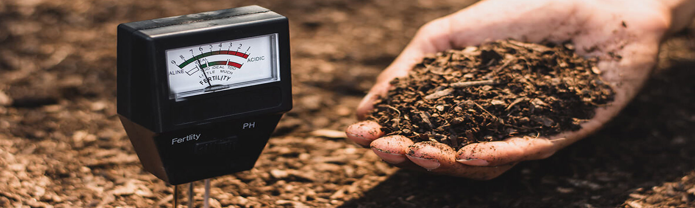
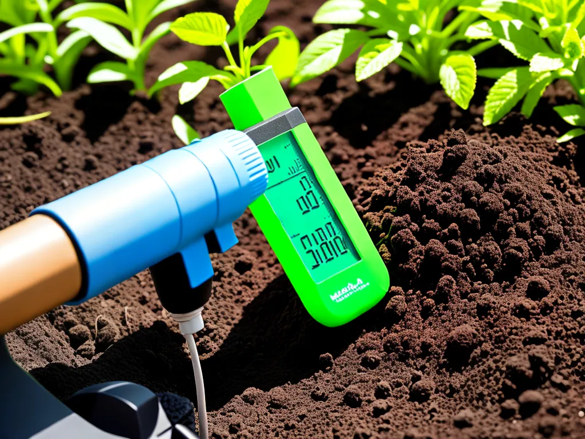

compre seu teste de ph.

Estes medidores de pH de solo utilizam uma sonda ou eletrodo que mede a atividade dos íons de hidrogênio no solo. Quando a sonda é inserida no solo, cria-se um circuito elétrico. O pH é medido pela diferença de potencial elétrico entre a sonda e o solo.
Para medirmos o pH de uma substância com precisão, utilizamos o peagâmetro, constituído basicamente por um eletrodo e um potenciômetro. O potenciômetro é utilizado na calibração do aparelho com soluções de referência – a medida do pH é feita com a imersão do eletrodo na solução a ser analisada.
